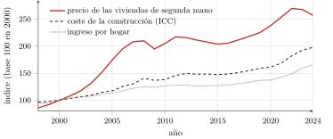

— Traducción por IA — Claude Fable 5 (Anthropic)
Primera parte — Teoría de la renta y del espacio · Capítulo 4
4 De la tierra al espacio construido: la localización, producto colectivo y peaje privado
El espacio (social) es un producto (social).
Henri Lefebvre, La producción del espacio (Lefebvre 1974).
Los tres capítulos precedentes han conducido la renta hasta su forma capitalista acabada — pero sobre el suelo agrícola, el de Ricardo y de Marx, el de los arrendatarios y los campos. Ahora bien, el objeto de este libro no es el trigo: es la vivienda, la oficina, el almacén — el espacio construido, allí donde el usuario vive y trabaja. Hay que dar, pues, el paso: transferir las leyes de la renta de la tierra cultivada al espacio construido. Este paso no tiene nada de un golpe de fuerza; Marx lo inició, y la escuela que lo siguió — Lefebvre, Lipietz, Harvey — lo consumó. Revela de paso lo que gobierna sin duda toda la primera parte: lo que la fertilidad era para la tierra, la situación lo es para el suelo urbano. Pero la situación, a diferencia de la fertilidad, no es una cualidad natural del suelo: es un producto colectivo. El condicionamiento que el capítulo 1 tenía por un dato se vuelve aquí una fabricación social — y es ella la que el propietario embolsa sin haberla hecho. Tal es la tesis del capítulo: la renta urbana es el peaje cobrado sobre un valor que todos producen y que uno solo capta.
4.1 La transferencia de las leyes de la renta: de la fertilidad a la situación
El primer paso de la transposición no es nuestro: es de Marx. En el capítulo xlvi del Libro III («La renta de los terrenos edificables. La renta de las minas. El precio de la tierra»), extiende el análisis de la renta al suelo urbano, y opera en él el desplazamiento decisivo: lo que, para la tierra agrícola, dependía de la fertilidad depende en adelante del emplazamiento. Las rentas de los terrenos edificables «se caracterizan, en primer lugar, por la influencia preponderante que ejerce en ellas la situación».1 La ley de la renta diferencial se transpone entonces término a término: allí donde capitales iguales aplicados a tierras desigualmente fértiles daban productos desiguales, capitales iguales invertidos en parcelas desigualmente situadas dan ingresos desiguales; la diferencia se muda en sobreganancia, y la sobreganancia en renta en beneficio del propietario del suelo. La barrera de la propiedad se transpone igualmente: el emplazamiento peor situado no está franco de renta, porque hay que estar en alguna parte, y ningún terreno se cede gratuitamente mientras dura la propiedad privada del suelo (capítulo 3).
Esta transferencia, la economía marxista de lengua francesa la sistematizó, y el crédito le corresponde. Fue Alain Lipietz quien, el primero, la llevó a su concepto, en un libro cuyo título dice ya toda nuestra tesis: Le tribut foncier urbain (el tributo urbano del suelo, 1974).2 Reemplaza allí la fertilidad y la distancia por una «predisposición» de los suelos que llama la división económica y social del espacio: un barrio, por sus comunicaciones, su vecindario, sus equipamientos, se presta a tal uso y lo valoriza — y es esa predisposición, no virtud alguna del suelo, la que gobierna la renta.3 Sobre todo, despeja la naturaleza del derecho que permite el cobro. No es una capacidad productiva; es «una propiedad puramente política: un mapa de los “derechos sobre”», el derecho de cobrar un tributo a quienquiera que pretenda utilizar la parcela.4 La misma escuela ha ahondado el surco: ha mostrado cómo el promotor, agente intermediario entre mercado del suelo, mercado financiero y obra, transforma la sobreganancia de localización en renta, y por qué la vivienda sigue siendo una «mercancía imposible»; ha referido la forma del espacio urbano a la alianza del Estado y del gran capital.5 Queda por establecer el punto que esta escuela plantea pero que este libro quiere poner en el centro: que la situación, que hace la renta, es una obra común.
4.2 La localización es un producto colectivo
¿Por qué una parcela vale más que otra? No porque su propietario la haya mejorado — si lo ha hecho, drenaje o edificio, eso es capital incorporado, una producción real, cuyo interés no es renta (capítulo 3). Una parcela vale más porque está mejor situada: cerca del centro, de los transportes, de los empleos, de las escuelas, de los comercios, de los demás. Ahora bien, nada de todo eso es obra del propietario. El valor de emplazamiento es producido por la presencia y la actividad de todos — los vecinos, los transeúntes, los servicios públicos, las generaciones que han construido la ciudad. Es lo que Lefebvre estableció bajo una fórmula que se ha hecho clásica: el espacio no es un contenedor neutro donde las cosas se ordenarían, sino un producto social, segregado por la actividad de conjunto de una sociedad.6
El corazón de esta producción es la centralidad. La ciudad, escribe Lefebvre, es una «obra» más que un producto: el efecto de reunión y de simultaneidad por el cual se concentran, en un lugar, los hombres, las actividades, las riquezas y los intercambios.7 Esta centralidad es una externalidad en sentido estricto: nadie la produce por sí solo, y cada cual contribuye a ella por su sola presencia. Un emplazamiento es deseable porque todos los demás están allí; su valor es la sombra proyectada, sobre una parcela, de la obra colectiva que es la ciudad. Este punto desplaza la tesis del capítulo 1. Allí, el suelo condicionaba el acceso, y su condicionamiento pasaba por un dato natural, anterior a todo trabajo. Aquí, el condicionamiento mismo — la situación — está fabricado, y fabricado por la colectividad entera. El propietario del suelo urbano no se limita a no producir nada: embolsa, como si fuera su autor, el valor de una cosa que todos han hecho. Por eso Lefebvre anota que, en ese movimiento, «el suelo urbano entra en el valor de cambio»: la obra común es convertida en título privado.8
4.3 … captada privadamente
Ese valor producido por todos, el propietario lo capta íntegramente, y lo capta como una transferencia, no como una producción. Es la demostración de David Harvey. Desde su estudio de Baltimore, forja la categoría de renta de monopolio de clase: el ingreso que una clase de detentadores — arrendadores, financieros — extrae de un recurso vital y escaso imponiendo a la clase de los usuarios un «rendimiento mínimo» garantizado, por el solo juego de su poder y de una escasez estructurada.9 Treinta años después, da su fórmula general: «toda renta descansa en el poder de monopolio de propietarios privados sobre ciertas porciones del globo».10 Y plantea, mejor que nadie, la pregunta que está en el corazón de este libro. Lo que hace el valor de un lugar, muestra, es un «capital simbólico colectivo», marcas de distinción «a las que cada cual ha contribuido, hoy como en el pasado»; ¿por qué, entonces, «dejar que la renta de monopolio ligada a ese capital simbólico sea captada por las solas multinacionales o por un delgado segmento de la burguesía local»?11 La pregunta es exactamente la de la fórmula trinitaria invertida: un tercero (el propietario del suelo) se interpone entre la obra colectiva y sus autores para cobrar de ella el peaje.
La investigación de la década de 1970 lo había establecido en el terreno más concreto. A coste de construcción casi igual, el mismo metro cuadrado construido se vende bastante más caro en un barrio elegante que en un suburbio obrero; es esa sobreganancia de localización, y solo ella, la que el propietario del suelo capta bajo la forma del precio del terreno.12 El peaje urbano tiene así su figura acabada: el propietario guarda la puerta de un emplazamiento que todos han hecho deseable, y hace pagar el paso — el valor de uso de la ciudad, obra común, es confiscado como valor de cambio de un título privado.13
4.4 La prueba por los precios: es la localización, no lo construido
Esta tesis se verifica en los precios, y la verificación es tanto más probatoria cuanto que viene de una fuente no sospechosa de marxismo. Para aportarla, hay que hacer primero el reparto que la disciplina del capítulo 3 impone: en el precio de una vivienda, separar lo que paga una producción real — lo construido, obra de albañiles, amortizable, legítima — de lo que paga la sola detentación del suelo. Ahora bien, lo segundo supera masivamente a lo primero, y de manera creciente. El estadístico público lo establece mediante lo que llama la «cuenta atrás»: el promotor fija el precio que puede pagar por un terreno partiendo del precio de las viviendas del vecindario y restando sus costes. De modo que, concluye el estadístico, «es el precio de las viviendas del vecindario el que […] determina el precio de los terrenos, y no a la inversa».14 El precio del suelo no es un coste que entraría en el precio de la vivienda: es el residuo que el precio de la vivienda deja al propietario, una vez pagada la producción.
Los órdenes de magnitud confirman el reparto. De 2000 a 2020, el índice del coste de la construcción progresó alrededor de un 60 %, mientras que el precio de las viviendas antiguas se multiplicaba por 2,3 a 2,7: la diferencia, es decir, lo esencial del alza, es imputable al suelo, no a los ladrillos (figura 1.1).15 Puede decirse de otro modo, y más crudamente, comparando el precio de mercado con el coste económico real de una vivienda — lo construido amortizado, el mantenimiento, el suelo contado por nada: en París, alojarse cuesta alrededor de cinco veces ese coste, y comprar más del doble; la parte que excede no es otra cosa que el tributo de situación.16 La forma pura de esta renta de situación se lee allí donde la centralidad es extrema: un comercio de los Campos Elíseos paga un alquiler que puede alcanzar varios centenares de veces el coste económico de su local — no porque allí se construya de otro modo, sino porque el valor de la dirección, producido por la ciudad entera, se capta allí en estado puro.17

Balance
Al término de esta transposición, el libro ha alcanzado su objeto: en el suelo urbano, lo que la fertilidad era para la tierra, la situación lo es para el espacio construido; pero la situación es un sistema de accesibilidades y de externalidades producido colectivamente (la obra de la ciudad entera) y captado privadamente por el propietario del suelo, que no es en nada su autor. La renta urbana es, pues, como la renta agrícola, un tributo y no una producción: el peaje cobrado sobre un valor común. Es incluso su forma más nítida, porque aquí nadie puede fingir que el suelo «produciría»: lo que hace el valor de un emplazamiento es, visiblemente, la presencia de los demás.
De esta constatación parten dos hilos, que las partes siguientes retomarán. Uno conduce a la medición. Capitalizada al tipo de interés, la renta de situación se convierte en un precio, y el título sobre el suelo «se convierte en una forma de capital ficticio»: un activo evaluado por el flujo de tributo que promete, hacia el cual el capital excedente se vierte como en un «segundo circuito».18 Es el germen de la financiarización de la vivienda: la parte III tomará su medida, en euros, y velará por no contar jamás ese tributo como una producción. El otro hilo conduce al sujeto. Si el valor de la ciudad es producido por todos y captado por uno solo, entonces la línea divisoria está trazada: de un lado el usuario, que paga por habitar y trabajar el lugar que contribuye a hacer vivir; del otro el rentista, que cobra. Lefebvre extrajo de ello la consigna que gobierna toda la parte IV — el «derecho a la ciudad», «un grito y una reivindicación»: el derecho, para quienes hacen la ciudad, de reapropiársela.19 Pero es en el capítulo siguiente donde hay que fundar primero ese sujeto en rigor — establecer quién es el usuario, quién es el rentista, y por qué forman los dos polos de una misma relación: allí se encuentra el cerrojo conceptual del libro.
(Marx 1894), cap. xlvi. La renta diferencial de situación, simple segundo determinante en el Marx agrícola (cap. xxxix, y capítulo 3 aquí), se convierte en la ciudad en el determinante preponderante. No se vuelven a exponer aquí los otros dos motivos del mismo capítulo xlvi — la renta de la «miseria», «fuente más rica que las minas del Potosí», y el «tributo [pagado] para poder habitar la tierra» —: su foco, porque fundan el sujeto de clase, está en el capítulo 5.↩︎
(Lipietz 1974). Lipietz se da allí explícitamente por tarea «transponer a los suelos urbanos la teoría de la renta, que Marx había desarrollado únicamente para los terrenos agrícolas» (Lipietz 2013). El presente libro no reinventa, pues, ese gesto: lo recibe de Lipietz, y le debe hasta la palabra tributo. Su aporte propio está en otra parte: en la larga duración que precede al capitalismo (capítulos 1 y 2), en el sujeto de clase que la renta opone (capítulo 5), y en la medición de su monto (parte III).↩︎
(Lipietz 2013), resumiendo la «teoría estándar» de 1974. La división económica y social del espacio es el equivalente urbano de la fertilidad: un mapa de valores de emplazamiento, producido por la historia y la actividad colectivas.↩︎
(Lipietz 2013). Lipietz toma a sabiendas la palabra tributo del «modo de producción tributario» de Samir Amin, «puesto que así es exactamente como procedía el señor feudal o el gobernador de una provincia» — la misma filiación que la de los capítulos 2 y 3. El tributo urbano del suelo no es el precio de un servicio: es el derecho político de exigirlo.↩︎
Sobre el promotor y la producción capitalista de la vivienda, (Topalov 1974); sobre la teoría de la ganancia, de la renta y de la ciudad, (Topalov 1984); la «mercancía imposible» se moviliza en el capítulo 5 ((Topalov 1987)). Sobre el Estado y la cuestión urbana, (Lojkine 1977).↩︎
(Lefebvre 1974). «El espacio (social) es un producto (social)»: el espacio no es ni un vacío pre-dado ni una forma impuesta desde fuera, sino el resultado continuamente producido de la práctica social.↩︎
(Lefebvre 1968). La ciudad como «obra» (próxima a la obra de arte) opuesta al simple «producto»; la forma urbana definida como «el encuentro, la reunión de lo que existe en los alrededores». La «obra» corresponde al valor de uso, el «producto» al valor de cambio: la mercantilización de la ciudad subordina el primero al segundo.↩︎
(Lefebvre 1968): la especulación con el suelo hace entrar «el suelo urbano en el valor de cambio». Es el exacto análogo urbano de la acumulación primitiva del capítulo 2: una puesta en propiedad de lo que era común.↩︎
(Harvey 1974). Harvey trata allí explícitamente la renta como «un pago de transferencia […] más que un incremento de valor por la producción»: la confirmación, por otro camino, de la tesis de los capítulos 1 y 3 (la renta no es una producción). En Baltimore, la escasez que hace exigible el tributo está ella misma fabricada por las instituciones financieras, que estructuran submercados y ocupan la cima de la jerarquía.↩︎
(Harvey 2002) (The Art of Rent); traducción nuestra. La renta de monopolio nace del control exclusivo de un bien «único y no reproducible»; su versión propiamente urbana es la centralidad, por la que comerciantes y hoteleros pagan una prima de accesibilidad.↩︎
(Harvey 2002), traducción nuestra. La pregunta es distributiva y política: ¿a quién corresponde la renta de un valor que todos han producido? Es, transpuesta al espacio, la pregunta misma del usuario y del rentista (capítulo 5).↩︎
(Lipietz 2013): en la época de la investigación, «las diferencias de precio de construcción por m² no excedían el 10 % entre los barrios obreros y los barrios de clases medias, pero […] los precios de venta eran ya bastante más elevados en los segundos […] siendo esa sobreganancia captada en forma de precio del suelo por los propietarios iniciales». La construcción es una producción real; la diferencia de precio, a construcción igual, es puro tributo de localización.↩︎
Un alto funcionario del urbanismo lo anotaba ya en 1976: (Querrien 1976). Para Max Querrien — consejero de Estado, antiguo director de Arquitectura —, «el suelo […] toma el valor de cambio que le dan el derecho de construir y la renta de situación, que son, uno y otra, productos inmateriales de la actividad social: planes de urbanismo, equipamientos públicos financiados por los contribuyentes, entusiasmo y marketing»; de suerte que «la ganancia del suelo es una plusvalía adquirida sin trabajo» y que «los propietarios del suelo embolsan la plusvalía» producida por la colectividad.↩︎
(Friggit 2024), §4.2. Es, palabra por palabra, la renta price-determined de Ricardo y de Marx (capítulos 1 y 3), enunciada por el servicio estadístico del Estado: el precio del suelo es un residuo, no un coste. «Cuando un operador se queja del precio elevado del suelo, deplora el precio de las viviendas del vecindario.»↩︎
Índice INSEE del coste de la construcción, 2000–2020; precios de las viviendas antiguas, (Friggit 2024). El suelo representa hoy hasta el 40 % del precio de una vivienda nueva en Île-de-France (Notaires du Grand Paris 2021). Una reserva, que el propio Friggit plantea: el despegue posterior a 2000 se debe sobre todo al crédito barato (tipos bajos, alargamiento de los préstamos). Lejos de infirmar la tesis, eso da su mecanismo: el dinero fácil infla la solvencia de los hogares, y es el precio del suelo — residuo — el que la absorbe. La renta de localización es precisamente lo que se capitaliza cuando el dinero abunda.↩︎
Cálculos detallados y fuentes en la parte III (alquileres: OLAP, Bien’ici; precios: notarios, SeLoger; costes de construcción: USH). Solo se dan aquí estos ratios a título de ilustración de la transposición: su medición sistemática — y el monto agregado del tributo — es el objeto de la parte III, que hace su inventario.↩︎
Alquileres prime del comercio parisino: fuentes VALORIS/CBRE, detalladas en la parte III. La dirección no produce nada; concentra el valor que la metrópoli entera ha fabricado. Es la renta de monopolio de Harvey llevada a su colmo: la unicidad no reproducible de un emplazamiento.↩︎
(Harvey 1982), cap. 8 y 11: la renta capitalizada hace del título sobre el suelo un «capital ficticio»; lo construido forma un «segundo circuito» de absorción del capital. (Lefebvre 1970) llamaba ya al sector inmobiliario un «segundo sector» adonde el capital afluye cuando la industria se ralentiza. Sobre la tierra convertida en activo financiero de un «Estado propietario», (Haila 2016).↩︎
(Lefebvre 1968): el derecho a la ciudad como «grito y reivindicación», «derecho a la vida urbana transformada y renovada». No es una nostalgia de la vieja ciudad; es la reivindicación de que la obra común vuelva a sus autores. El argumento es normativo: se anota aquí, solo se despliega en la parte IV.↩︎